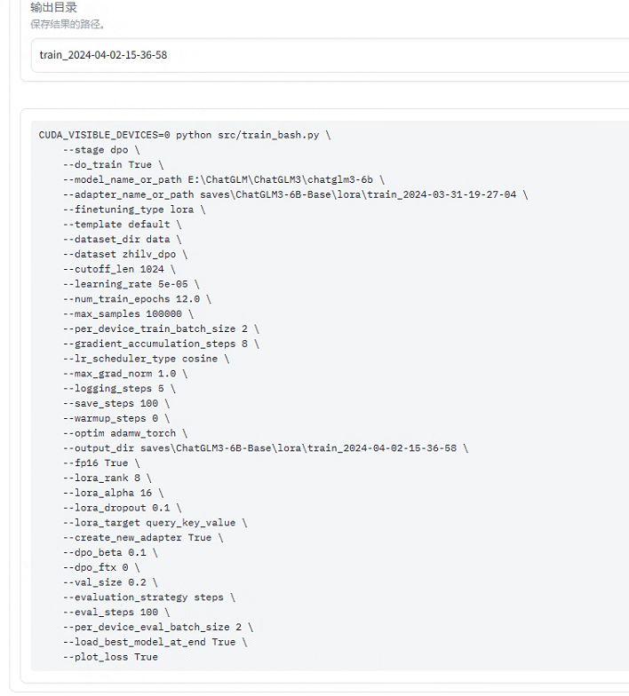

问题说明
基于给定目标城市，城市可由参赛选手自己选择。通过网络、书籍等方法整理收集目标城市的文旅数据，包括但不限于城市的历史、名人、景点、饮食特色、热门店铺等信息，构建语料库，并基于大模型微调的相关技术方法，实现基于大模型的语料库问答系统。其中对于大模型的选择可以选取一些开源模型，如GLM、modelscope开源的GPT-3中文版本、LLaMA、BLOOM等。
此次基于chatglm3-6b 进行微调，使用较低的配置实现较高的性能
24/04/09突然觉得在做无意义的事，找一段文本或者根本不找，让一个模型（copilot、kimi…）跑出些问答数据集，再塞给另一个模型微调……
期望
基于目标城市的文旅数据，构建语料库并进行大模型的微调，实现基于大模型的语料库问答系统。通过问答系统实现用户输入以下问题，问题示例如下：
请推荐XX城市的三个最热门的景点？
- XX景点位于什么地方？
- 介绍一下XX景点的历史？
- XX附近有什么推荐的小吃店铺？
该问答系统能够给出上述问题的回复。
要求
收集目标城市的相关文旅数据，进行语料库的构建（方法不限），并基于语料库进行大模型微调，实现基于该语料库的问答系统。
- 详细方案内容完备，具有可行性和先进性；
- 模型支持至少两轮问答；
- 具备大模型的基础问答能力和基于语料库的问答能力。考核方法基于用户提供的语料范围，编制问题，对模型进行提问，对模型问答能力进行评估；
- 具有交互界面，可通过浏览器进行访问，页面的访问延迟和问答的响应延迟不超过10s；
- 语料库数据不低于3000条。
TODO
语料库格式、内容
（instruction + output + history + input + ？）查看SHA1码：certutil -hashfile zhilv_dpo.json SHA1
使用高德地图API或爬点什么网站的数据或使用其他方法构建语料库
（在建了在建了…）
使用了高德地图的API，能否使模型能调用agent（工具），再根据返回的json进行回答
对于城市的历史、名人、景点、饮食特色、热门店铺等信息，考虑到语聊集的格式，
某某某的周边热门店铺有哪些，不太方便输入，可以考虑语聊集+工具调用的方法，好像也挺方便，比如instruction灵隐寺周边的奶茶店 output 古茗、一点点等……
（支持多轮，如果能再问“灵隐寺最近的古茗”，此处调用API回答是否能加分）
希望能把composition-demo里的chat和tool结合起来，并不以streamlit形式输出，”Tool: 工具模式，模型除了对话外，还可以通过工具进行其他操作“
似乎不需要结合？
微调 p-tuning | Lora | DPO |etc.
24/03/30 Lora微调好了，且无报错的导出了模型，但是问答效果不好，想试试DPO
04/01 开始着手微调的优化：秩(r)、缩放系数(alpha)：一般alpha是r的两倍
是否需要制作偏好数据集（太麻烦了，优先级低）
“微调是为了修正一些向量的参数”，但假如通过微调修改了chatglm的自我认知，？
04/02 偏好数据集，制作中！
制作好了，第一次DPO微调
 微调出来效果貌似也一般，如果想准确回答的话，不应该用过向量数据库吗（后知后觉），毕竟chatGPT也无法做到数据向的精准回答（增大某些词的参数吗…）
04/03 微调出了什么**…数据集不够大，轮数太多，导致了灾难性遗忘，只会阿巴阿巴了
调小轮数试试（DPO epochs3，r8，alpha16，0.15）
04/06 看看open AI文档 Question answering using embeddings-based search
Note: To answer questions based on text documents, we recommend the procedure in Question Answering using Embeddings.
推荐使用Embedding，不涉及微调，难搞

04/08 扩充一下数据集，再试着调一下
模型评估（loss、准确度）
模型评估调优、测试
知名景点
小众景点
不存在的景点不乱答（幻觉现象少）
能回答附带图片（感觉是加分项）
conversation里有image属性，似乎可以使用/ 拓展
前后端联调
24/03/30尝试看源码，把chatglm提供的综合demo去除streamlit
03/31 fastAPI ? 似乎就chat而言，每次需要传输的，就是conversation.py里的
04/01 查看了FastAPI、uvicorn、Flask、ASGI/WSGI，
还是保留streamlit（比如使用它的session）+fastAPI吧，好复杂（shi山代码是如何形成的） 04/02 尝试用FastAPI给前端提供数据了
目前看需要俩，一个是前端加载时提供一个client；一个是conversation对话 从好几个方向写，但总感觉很卡手。无法同时部署streamlit和uvicorn（FastAPI），俩服务器就不互通，数据使用起来很难受。Flask和streamlit一样，是写在后端的前端界面。如果用Vue+node.js，中间多出来的request、response，以及前端该如何做，很陌生
04/03 有点混乱，简单的来看，就是前端，携带一推数据，用get向后端发起请求
后端收到请求后，此处对应的功能就是原代码中的 if prompt_text
需要解决的
BaseModel类（删掉就能跑了，好神奇） history这些参数该如何存储（json）
04/04 改来改去，改好了一个，


后续
数据集优化，使之更符合自然语言&多样化 —> 微调 —> 生成回答数据集 —> 计算相似度
未微调过的模型 生成回答数据集 计算相似度 作为对比（前提是有高质量数据集）
加一个功能：当用户查看我们网站的内容时，为了便于浏览，用户可以通过模型输入要搜索的内容，快速找到网站中的内容
初步解决方法：问答的函数内，放一个函数，实现: 先判断内容是否与网站内容有关，有则返回一个字符串”您是否在查找这个{网站链接}”，无则返回空。并拼接到此次回答中。此处的判断，”与…有关联”。用字典 {“西湖”: “URL”，…}，对输入进行处理，输入包含的词的频率最高的是否在字典里
加一个功能：希望在问答中能回答制定精品路线，明确关键词（如”两天”、”指定几个景点”）
PEFT（一个参数高效微调大模型的工具）
PEFT（Parameter-Efficient Fine-Tuning）是hugging face开源的一个参数高效微调大模型的工具，里面集成了4种微调大模型的方法，可以通过微调少量参数就达到接近微调全量参数的效果，使得在GPU资源不足的情况下也可以微调大模型。
微调
微调这个训练不是为了准确的搜索数据库（Embeddings才是），微调是为了修正一些向量的参数：比方说我想写一个短视频口播文案，同样是论证观点，口播并不会像写论文等书面文案一样用严格的格式让你理解逻辑结构，所以一般口播中就不会用首先其次再次这样的说法。那么我需要通过训练把这些词的权重降低。
重点是方法和高质量数据集
微调可以分为全微调和重用两个方法：
- 全微调（Full Fine-tuning）：全微调是指对整个预训练模型进行微调，包括所有的模型参数。在这种方法中，预训练模型的所有层和参数都会被更新和优化，以适应目标任务的需求。这种微调方法通常适用于任务和预训练模型之间存在较大差异的情况，或者任务需要模型具有高度灵活性和自适应能力的情况。Full Fine-tuning需要较大的计算资源和时间，但可以获得更好的性能。
- 部分微调（Repurposing）：部分微调是指在微调过程中只更新模型的顶层或少数几层，而保持预训练模型的底层参数不变。这种方法的目的是在保留预训练模型的通用知识的同时，通过微调顶层来适应特定任务。Repurposing通常适用于目标任务与预训练模型之间有一定相似性的情况，或者任务数据集较小的情况。由于只更新少数层，Repurposing相对于Full Fine-tuning需要较少的计算资源和时间，但在某些情况下性能可能会有所降低。
微调预训练模型的方法：
- 微调所有层：将预训练模型的所有层都参与微调，以适应新的任务。
- 微调顶层：只微调预训练模型的顶层，以适应新的任务。
- 冻结底层：将预训练模型的底层固定不变，只对顶层进行微调。
- 逐层微调：从底层开始，逐层微调预训练模型，直到所有层都被微调。
- 迁移学习：将预训练模型的知识迁移到新的任务中，以提高模型性能。这种方法通常使用微调顶层或冻结底层的方法。
p-tuning和Lora的区别
p-tuning
p-tuning v2并不是一个新技术，而是之前用于少样本学习，少样本学习分为离散型模板和连续性模板，离散性模板主要是构建文字描述模板，而连续型模板则是插入连续型token构成的模板，之前文章中我也讲述了离散型和连续型两种prompt方法。
p-tuning v2简单来说其实是soft prompt的一种改进，soft prompt是只作用在embedding层中，实际测试下来只作用在embedding层的话交互能力会变弱，而且冻结模型所有参数去学习插入token，改变量偏小使得效果有时候不太稳定，会差于微调。p-tuning v2则不只是针对embedding层，而是将连续型token插入每一层，增大改变量和交互性。

soft prompt比较依靠模型参数量，在参数量超过10B的模型上，效果追上了fine-tune，但是ptuning v2因为每层插入了token，增大模型训练的改变量，更加适用于小一点的模型
Lora
Lora主要在模型中注入可训练模块，大模型在预训练完收敛之后模型包含许多进行矩阵乘法的稠密层，这些层通常是满秩的，在微调过程中其实改变量是比较小的，在矩阵乘法中表现为低秩的改变，注入可训练层的目的是想下游微调的低秩改变由可训练层来学习，冻结模型其他部分，大大减少模型训练参数。

推理计算的时候，因为没有改变预训练权重，所以换不同的下游任务时，lora模型保存的权重也是可以相应加载进来的，通过矩阵分解的方法参数量减少了很多，且推理时可以并行，对于推理性能并没有增加多少负担，算是比较好的低资源微调方法。
Low-rank Adaptation低秩适配:
低秩适配方法致力于将模型权重的改变限制在一个低秩子空间内。这通常涉及对模型的权重矩阵进行分解，只微调其中的一小部分参数。这样可以有效减少计算资源的消耗，同时仍然允许模型有足够的灵活性来学习新任务。LoRA和它的变种，如Q-LoRA、Delta-LoRA、LoRA-FA等，都属于这个类别。
区别
两者对于低资源微调大模型的共同点都是冻结大模型参数，通过小模块来学习微调产生的低秩改变。但目前存在的一些问题就是这两种训练方式很容易参数灾难性遗忘，因为模型在微调的时候整个模型层参数未改变，而少参数的学习模块微调时却是改变量巨大，容易给模型在推理时产生较大偏置，使得以前的回答能力被可学习模块带偏，在微调的时候也必须注意可学习模块不能过于拟合微调数据，否则会丧失原本的预训练知识能力，产生灾难性遗忘。
最好能够在微调语料中也加入通用学习语料一起微调，避免产生对微调语料极大的偏向，在instruct gpt论文中也提到在强化学习ppo的时候模型也会很容易对于ppo数据拟合，降低模型通用自然语言任务能力，所以在ppo loss中加入了SFT梯度和预训练梯度来缓解这种遗忘问题。
Fine-tune a Mistral-7b model with Direct Preference Optimization
hugging face上前三提供的一种微调方法，前提：已经经过监督式微调的模型 + 高质量偏好数据集，不知道能不能学习一下
1 | # 以下是作者提供的参数 |
学习率的重要性
目前深度学习使用的都是非常简单的一阶收敛算法，梯度下降法，不管有多少自适应的优化算法，本质上都是对梯度下降法的各种变形，所以初始学习率对深层网络的收敛起着决定性的作用，下面就是梯度下降法的公式

这里 α 就是学习率，如果学习率太小，会导致网络loss下降非常慢，如果学习率太大，那么参数更新的幅度就非常大，就会导致网络收敛到局部最优点，或者loss直接开始增加，如下图所示。

微调方法选择
- LoRA（Low-Rank Adaptation）：LoRA 是一种高效的参数微调技术，旨在解决过拟合问题。它通过增加一个参数来调整模型中的知识级别，使其更好地适应特定任务。虽然不需要大量带标签的数据，但可能需要更多的计算资源
- P-tuning v2：P-tuning v2 是一种改进的微调方法，它通过使用预训练模型的一部分来进行微调，而不是使用整个预训练模型。这种方法可以减少计算需求，同时提高模型性能。然而，P-tuning v2 可能需要更精细的参数调整
如果你有大量标注数据，SFT（Standard Fine-Tuning） 可能是更好的选择。对于半监督学习场景，LoRA 可能更适合。而对于防止过拟合和轻量级微调场景，Freeze 可能更合适。请根据你的需求选择最适合的方法，以优化你的模型性能。（来自copilot）
是的，没错，暂时看不出来选哪个好，咱了解的还是太少了
大模型微调步骤
大模型微调如上文所述有很多方法，并且对于每种方法都会有不同的微调流程、方式、准备工作和周期。然而大部分的大模型微调，都有以下几个主要步骤，并需要做相关的准备：
- 准备数据集：收集和准备与目标任务相关的训练数据集。确保数据集质量和标注准确性，并进行必要的数据清洗和预处理。
- 选择预训练模型/基础模型：根据目标任务的性质和数据集的特点，选择适合的预训练模型。
- 设定微调策略：根据任务需求和可用资源，选择适当的微调策略。考虑是进行全微调还是部分微调，以及微调的层级和范围。
- 设置超参数：确定微调过程中的超参数，如学习率、批量大小、训练轮数等。这些超参数的选择对微调的性能和收敛速度有重要影响。
- 初始化模型参数：根据预训练模型的权重，初始化微调模型的参数。对于全微调，所有模型参数都会被随机初始化；对于部分微调，只有顶层或少数层的参数会被随机初始化。
- 进行微调训练：使用准备好的数据集和微调策略，对模型进行训练。在训练过程中，根据设定的超参数和优化算法，逐渐调整模型参数以最小化损失函数。
- 模型评估和调优：在训练过程中，使用验证集对模型进行定期评估，并根据评估结果调整超参数或微调策略。这有助于提高模型的性能和泛化能力。
- 测试模型性能：在微调完成后，使用测试集对最终的微调模型进行评估，以获得最终的性能指标。这有助于评估模型在实际应用中的表现。
- 模型部署和应用：将微调完成的模型部署到实际应用中，并进行进一步的优化和调整，以满足实际需求。
调参
学习率
| 学习率过大 | 学习率过小 | |
|---|---|---|
| 学习速度 | 快 | 慢 |
| 使用时间点 | 训练开始 | 一定轮数 |
| 副作用 | 易损失值爆炸；易震荡 | 易过拟合；收敛速度慢 |

- 曲线 初始时 上扬 【红线】：
Solution：初始 学习率过大 导致 振荡，应减小学习率，并 从头 开始训练 。 - 曲线 初始时 强势下降 没多久 归于水平 【紫线】：
Solution：后期 学习率过大 导致 无法拟合，应减小学习率，并 重新训练 后几轮 。 - 曲线 全程缓慢 【黄线】：
Solution：初始 学习率过小 导致 收敛慢，应增大学习率，并 从头 开始训练 。
参考链接：深度学习：学习率learning rate 的设定规律
Batch size
一般来说，在合理的范围之内，越大的 batch size 使下降方向越准确，震荡越小；batch size 如果过大，则可能会出现局部最优的情况（这也是其中的一个缺点吧）。小的 bath size 引入的随机性更大，难以达到收敛，极少数情况下可能会效果变好。
会影响训练的稳定性，Batch size过小会使Loss曲线振荡的比较大，大小一般按照2的次幂规律选择，这是为了硬件计算效率考虑的。

batch size 太小了（如果学习率问题不大的话）
loss
train loss 不断下降，test loss不断下降，说明网络仍在学习;
train loss 不断下降，test loss趋于不变，说明网络过拟合;
train loss 趋于不变，test loss不断下降，说明数据集100%有问题;
train loss 趋于不变，test loss趋于不变，说明学习遇到瓶颈，需要减小学习率或批量数目;
train loss 不断上升，test loss不断上升，说明网络结构设计不当，训练超参数设置不当，数据集经过清洗等问题。
top-p采样 / 温度
temperature 官网解释
What sampling temperature to use, between 0 and 2. Higher values like 0.8 will make the output more random, while lower values like 0.2 will make it more focused and deterministic. We generally recommend altering this or top_p but not both.
翻译：“采样温度”是在0到2之间选择的参数。较高的值（如0.8）会使输出更具随机性，而较低的值（如0.2）则会使输出更集中，更确定性。通常，我们建议修改“采样温度”或“top_p”其中之一，而不是同时修改两者。
top-p采样 官网解释
An alternative to sampling with temperature, called nucleus sampling, where the model considers the results of the tokens with top_p probability mass. So 0.1 means only the tokens comprising the top 10% probability mass are considered.
翻译：”nucleus sampling”（核采样或者叫做 top-p 采样）是一个替代温度采样的方法，其中模型考虑了具有 top_p 概率质量的 token 的结果。因此，0.1 表示只考虑包含在最高 10% 概率质量中的 token。
总结
“temperature” 影响了结果的随机性，而 “top_p” 则影响了结果的确定性。但他们是从不同的角度影响输出的：temperature 更偏向于控制输出的“随机性”，而 top-p 则是在给定的可能结果中设定一个“阈值”。
文本相似度
jieba分词 + 余弦相似度 + numpy处理 + matplotlib.pyplot画图
1 | # 计算平均值 |
引用：
初学者如何对大模型进行微调？ - 爱吃牛油果的璐璐的回答 - 知乎